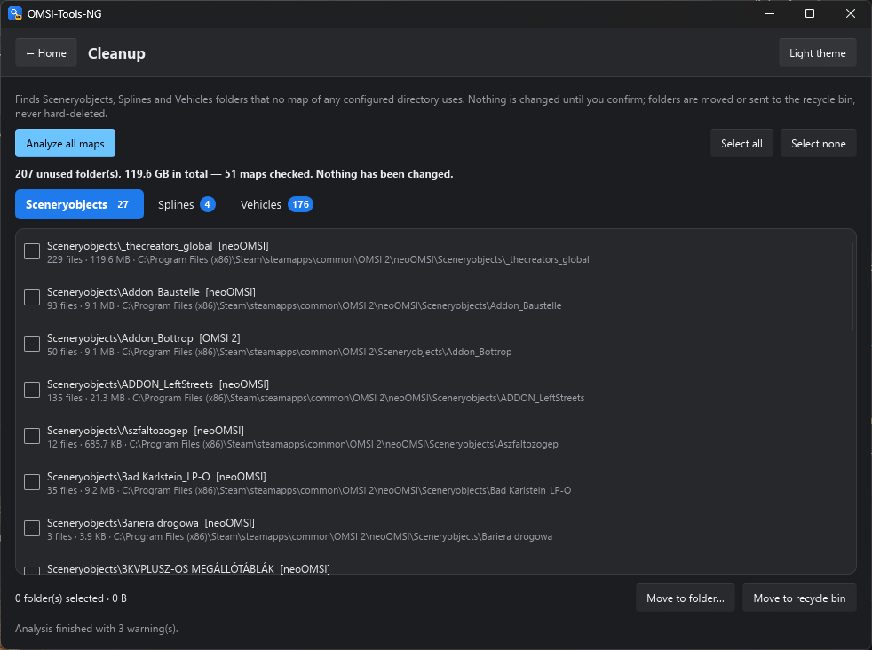

Find missing content. Clean up the rest.
A modern, fast rewrite of the map verification and cleanup tools of OMSI-Tools, for OMSI 2, neoOMSI and openOMSI.
English · Español · Deutsch · Polski · Čeština · Français | light and dark theme

Features
Map verification
Scans global.cfg, tiles (including Chrono), ground textures, parklists, humans, AI lists and trains, and reports every missing file by type, with the files that reference it.
One content pool
A file counts as present if it exists in any configured directory. A neoOMSI map using an object that lives in OMSI 2 is valid.
Safe cleanup
Finds unused Sceneryobjects, Splines and Vehicles folders. It previews first; nothing is changed until you confirm, and folders are moved or sent to the recycle bin – never hard-deleted.
Fast and read-only
A map with 7,500 referenced files is verified in about 2 seconds; analysing 51 maps for cleanup takes about 20 seconds. Scans never write to your installs and run on a worker thread with progress and cancel.
OMSI file formats done right
Windows-1252 and UTF-16/UTF-8 (BOM) text files, backslash paths and any capitalisation – the same on every platform.
Rust core, Slint UI
A UI-free core library with unit tests, and a small native app with six languages and light/dark themes.
Screenshots


Build and run
You need a recent stable Rust toolchain.
cargo test
cargo run -p appCommand line, read-only:
cargo run -p omsi-tools-core --example scan -- "C:\...\OMSI 2" "C:\...\OMSI 2\neoOMSI" - "Map name"
cargo run -p omsi-tools-core --example cleanup_preview -- "C:\...\OMSI 2" "C:\...\OMSI 2\neoOMSI"